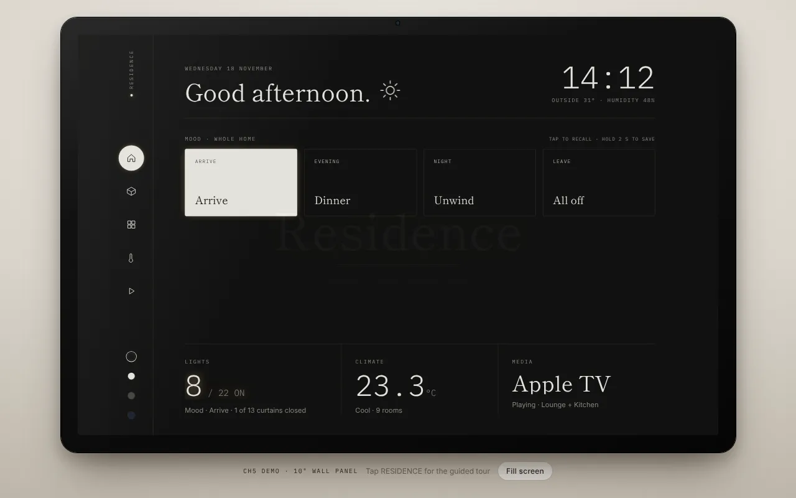
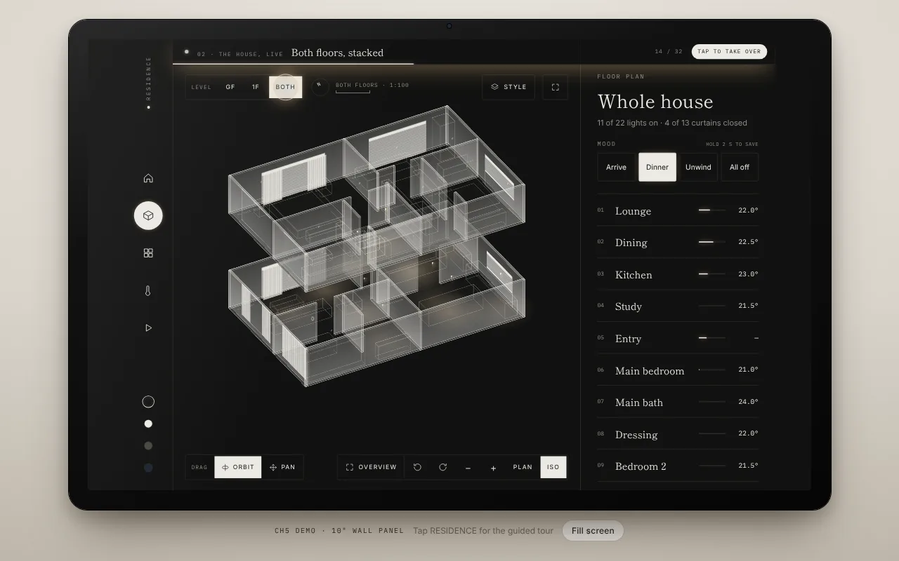
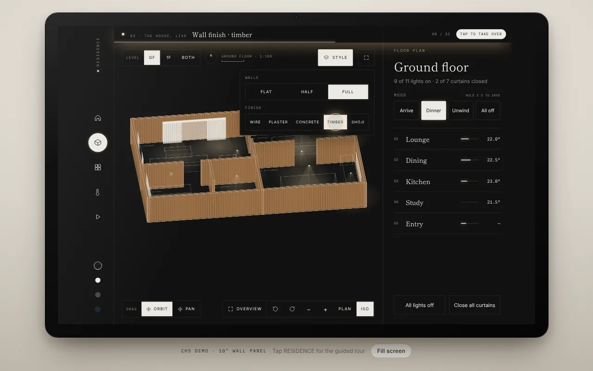
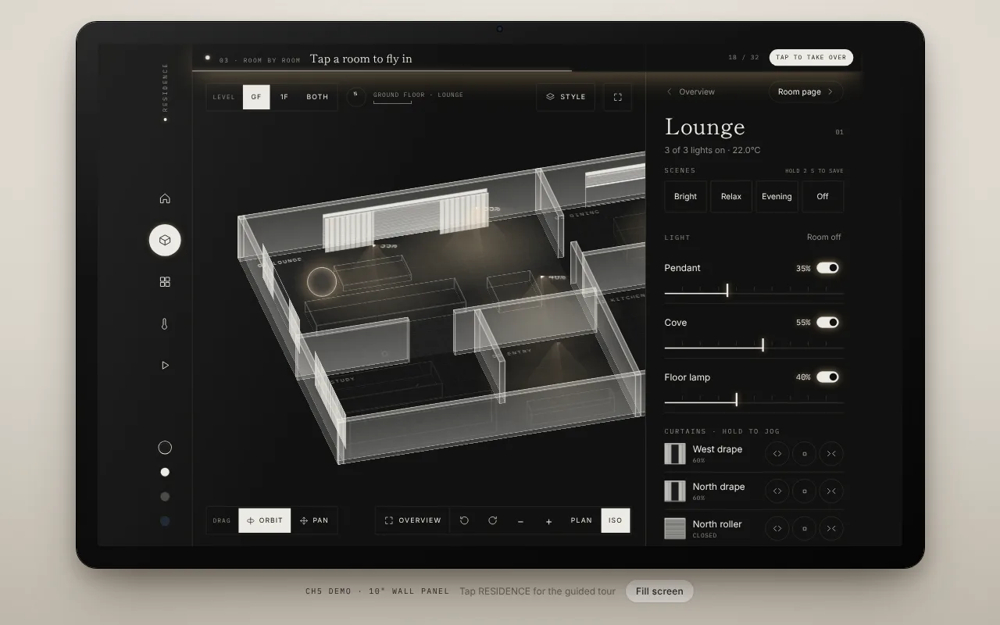

challenge 02 / 2026 / crestron ch5
The Panel.
demo mode built inA complete Crestron CH5 touch-panel interface for a residence — lights, drapes, climate, media and a live 3D floor plan — with a built-in demo mode that simulates the house, so a client can try it before anything is installed.
- platform
- crestron ch5
- stack
- html / css / js + preact
- layouts
- wall · tablet · phone
- builds
- v1.0 → v2.5
Challenge
[01]Clients sign off on a panel they've seen never touched.
A touch panel is the part of a smart home people use every day — but it's usually approved from a PDF of screens. A PDF can't show how a scene fades in, how drapes travel or how it feels under a finger.
Showing the real thing meant a processor, a program and a panel on a bench. And panels drawn the old way, in VT Pro-e, look their age. So: build a panel that shows what CH5 can do, with a demo mode that simulates the whole house — so it can be shown on a wall panel, an iPad, a phone or a laptop on a TV. On a real job it runs on the Crestron processor like any other panel.
Try it
[02]the actual panel, running in your browser. switch the screen, or let it give you the tour.
Then → now
[03]From a fixed canvas to the open web.
For years Crestron panels were drawn in VT Pro-e: a fixed canvas for each panel size, built from the tool's own set of objects. It works — but it boxes the interface in.
CH5 turns the panel into a web app. Crestron Construct still builds CH5 panels from widgets — but underneath it's HTML, CSS and JavaScript. The Panel is written in that code directly, so a 3D floor plan, real physics, one project for every screen and a self-running demo are all on the table.
| vt pro-e the old way | ch5, hand-built the panel. | |
|---|---|---|
| built with | its own design tool and object set | web code — html, css, javascript, with crestron's ch5 libraries |
| screen sizes | one fixed layout per panel size | one project; the layout follows the screen |
| graphics | images and built-in objects | anything the browser can draw: a live 3d floor plan, physics, themes |
| preview | needs the tool or a panel | any browser |
| history | binary project files | plain text — git, diffs, every version |
| client demo | set up a processor and program on a bench | built-in demo mode: simulates the house, tours itself |
How it works
[04]One design file
The whole interface lives in one design file. A small build script renders it with Preact into a plain web project — the panel behaves exactly like the prototype.
Main.dc.html → build_demo.js → SOURCE/ → .ch5zA floor plan you can hold
A wireframe 3D model of both floors: orbit, pan, pinch, twist. Walls flat, half or full, five finishes. Tap a room and the camera flies in with its controls.
Physics, not animation
A flick keeps turning and fades out like a turntable. Speed is read from the last 100 ms of the drag, so letting go feels natural.
Every screen, one project
Landscape for wall panels, portrait for an iPad, phone for an iPhone — chosen from the screen's shape. Touch targets at least 40 px.
It demos itself
A ghost finger taps through 5 chapters with captions. Left alone for two minutes, it starts again — showroom mode.
Snaps
[05]




Learned
[06]Calm beats clever.
- Take things out light sweeps, tap ripples, particles — three builds removed effects
- Feel is physics momentum, easing and release decide if it feels expensive
- Show, don't spec a client holding the panel answers questions a PDF never will
all cases